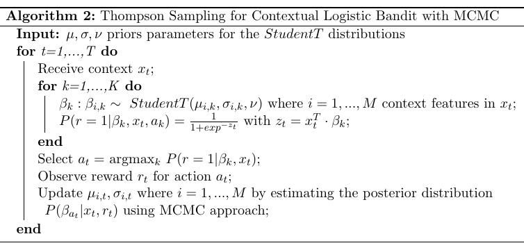

Contextual Multi-Armed Bandit
For the contextual multi-armed bandit (cMAB) when user information is available (context), we implemented a generalisation of Thompson sampling algorithm (Agrawal and Goyal, 2014) based on NumPyro.

The following notebook contains an example of usage of the classes CmabBernoulli (binary rewards) and CmabGaussian (continuous, real-valued rewards), which implement the algorithm above.
pybandits supports three kinds of reward for contextual bandits:
reward |
type |
model |
bandit |
|---|---|---|---|
binary 0 / 1 |
|
|
|
soft label in \([0, 1]\) |
|
|
the same |
real-valued |
|
|
|
The bandit entry points accept any of these reward types, and the actions manager checks each reward against what its models support.
Binary rewards: CmabBernoulli
Use CmabBernoulli when the reward is binary (or a soft reward in \([0, 1]\)), e.g. a click or a purchase.
[1]:
import numpy as np
from pybandits.cmab import CmabBernoulli, CmabGaussian
from pybandits.model import BayesianNeuralNetwork, BnnLayerParams, BnnParams, FeaturesConfig, StudentTArray
/home/runner/.cache/pypoetry/virtualenvs/pybandits-vYJB-miV-py3.10/lib/python3.10/site-packages/tqdm/auto.py:21: TqdmWarning: IProgress not found. Please update jupyter and ipywidgets. See https://ipywidgets.readthedocs.io/en/stable/user_install.html
from .autonotebook import tqdm as notebook_tqdm
[2]:
n_samples = 1000
n_features = 5
First, we need to define the input context matrix \(X\) of size (\(n\_samples, n\_features\)) and the mapping of possible actions \(a_i \in A\) to their associated model.
[3]:
# context
X = 2 * np.random.random_sample((n_samples, n_features)) - 1 # random float in the interval (-1, 1)
print("X: context matrix of shape (n_samples, n_features)")
print(X[:10])
X: context matrix of shape (n_samples, n_features)
[[ 0.9223057 -0.19631867 0.64915944 0.7755935 0.90478252]
[-0.21383341 0.74352959 -0.30671933 0.72688227 -0.15488172]
[-0.03190954 0.55236574 0.89093184 -0.19317918 -0.35127647]
[-0.72602476 -0.60947201 0.97725704 0.92734598 0.61077295]
[ 0.95286285 0.29340891 0.45229912 -0.13098653 0.22920726]
[ 0.242853 0.27953359 -0.97804377 0.67951579 0.76832936]
[-0.90356456 -0.59448691 -0.68911686 -0.78964453 0.05572857]
[-0.70722643 0.13090748 -0.96265206 -0.87671306 -0.17767843]
[-0.69844181 -0.13234735 0.66542511 -0.73943047 -0.33466242]
[ 0.83786072 -0.33309315 0.90201387 0.75465692 -0.08743625]]
[4]:
# define action model
bias = StudentTArray.cold_start(mu=1, sigma=2, shape=1)
weight = StudentTArray.cold_start(shape=(n_features, 1))
layer_params = BnnLayerParams(weight=weight, bias=bias)
model_params = BnnParams(bnn_layer_params=[layer_params])
feature_config = FeaturesConfig(n_features=n_features)
update_kwargs = {"num_steps": 100, "batch_size": 128, "optimizer_type": "adam"}
actions = {
"a1": BayesianNeuralNetwork(
model_params=model_params,
feature_config=feature_config,
update_kwargs=update_kwargs,
),
"a2": BayesianNeuralNetwork(
model_params=model_params,
feature_config=feature_config,
update_kwargs=update_kwargs,
),
}
We can now init the bandit given the mapping of actions \(a_i\) to their model.
[5]:
# init contextual Multi-Armed Bandit model
cmab = CmabBernoulli(actions=actions)
The predict function below returns the action selected by the bandit at time \(t\): \(a_t = argmax_k P(r=1|\beta_k, x_t)\). The bandit selects one action per each sample of the contect matrix \(X\).
[6]:
# predict action
pred_actions, _, _ = cmab.predict(X)
print("Recommended action: {}".format(pred_actions[:10]))
Recommended action: ['a1', 'a2', 'a2', 'a1', 'a1', 'a1', 'a2', 'a2', 'a2', 'a2']
Now, we observe the rewards and the context from the environment. In this example rewards and the context are randomly simulated.
[7]:
# simulate reward from environment
simulated_rewards = np.random.randint(2, size=n_samples).tolist()
print("Simulated rewards: {}".format(simulated_rewards[:10]))
Simulated rewards: [1, 1, 0, 1, 1, 1, 0, 0, 0, 1]
Finally, we update the model providing per each action sample: (i) its context \(x_t\) (ii) the action \(a_t\) selected by the bandit, (iii) the corresponding reward \(r_t\).
[8]:
# update model
cmab.update(context=X, actions=pred_actions, rewards=simulated_rewards)
Continuous rewards: CmabGaussian
Use CmabGaussian when the reward is real-valued, e.g. revenue or an uplift \(R - E_0(x)\) against a control baseline computed outside the bandit. Each action is a GaussianBayesianNeuralNetwork: a BNN with a single mean head \(\mu_k(x)\) and a learned scalar noise std \(\sigma_k\), trained with a Gaussian likelihood \(r \sim \mathcal{N}(\mu_k(x), \sigma_k)\). At prediction time the weights are sampled from the posterior and the bandit selects
\(a_t = argmax_k \mu_k(x_t)\).
Unlike CmabBernoulli, predict returns the sampled reward means in place of the probabilities, and the noise std \(\sigma_k\) (for monitoring only) in place of the weighted sums. The adaptive window (delta) is not supported, since its change-point test assumes binary rewards.
The Gaussian model
:math:`sigma_k` is a single noise std per action, not a function of the context. It is a latent (\(\log \sigma_k \sim \mathcal{N}\)) whose posterior is stored in the model state (
noise_log_sigma) and carried across updates, like the weights. Its initial prior is centered onnoise_sigma(in reward units) if given, otherwise on the std of the first update batch.Training is on the targets \((r - \text{reward\_loc}) / \text{reward\_scale}\). They are set in exactly one of two ways. With
fit_reward_standardization=False(the default), both must be given as fixed constants and are never re-fitted: choose them so the default \(O(1)\) weight priors fit (e.g.reward_loc=0, reward_scale=20for a centered uplift in dollars), or usereward_loc=0, reward_scale=1to train on raw rewards. Withfit_reward_standardization=True, leave both unset: they are fitted (mean / std) on the first batch, then frozen untilreset().Thompson sampling draws the weights from the posterior and ranks actions on \(\mu_k(x)\).
``reset()`` returns the model to its cold-start state, including the standardization: fixed values are restored, fitted ones are re-fitted on the next update.
Why one \(\sigma\) and not \(\sigma(x)\)
With a single noise level, the fit of \(\mu\) is a (Bayesian) least-squares fit, whose target is \(E[r \mid x]\) whatever the shape of the noise. A context-dependent \(\sigma(x)\) weights each residual by \(1/\sigma(x)^2\). On zero-inflated or skewed rewards (e.g. revenue), the model can then explain large rewards as noise instead of raising \(\mu\), which biases \(\mu\) low exactly where the rewards are most variable. That bias is what Thompson sampling would rank on.
We simulate a two-action environment where the expected reward of each action depends linearly on the first context feature, plus Gaussian noise. Action a1 is best when \(x_0 > 0.25\) and a2 otherwise.
[9]:
rng = np.random.default_rng(0)
noise_std = 0.5
# expected reward of each action as a function of the context
true_mean = {
"a1": lambda X: 1.0 + 2.0 * X[:, 0],
"a2": lambda X: 2.0 - 2.0 * X[:, 0],
}
X_gauss = 2 * rng.random((n_samples, n_features)) - 1 # random float in the interval (-1, 1)
The bandit is built with cold_start, which creates one GaussianBayesianNeuralNetwork per action id. We use a narrow prior on the weights and a larger optimizer step size, which make the unbounded Gaussian likelihood fit much faster. The rewards here are already \(O(1)\), so we train on the raw rewards with the fixed standardization reward_loc=0.0, reward_scale=1.0. For rewards far from \(O(1)\) (e.g. revenue in dollars), pass fixed values that bring them to \(O(1)\), or
set fit_reward_standardization=True (and no reward_loc / reward_scale) to fit both on the first batch. noise_sigma (in reward units) sets an initial guess of the noise std.
[10]:
cmab_gauss = CmabGaussian.cold_start(
action_ids={"a1", "a2"},
n_features=n_features,
hidden_dim_list=[16],
reward_loc=0.0,
reward_scale=1.0,
dist_type="normal",
dist_params_init={"mu": 0, "sigma": 0.1},
update_kwargs={"num_steps": 1000, "optimizer_kwargs": {"step_size": 3e-3}},
random_seed=0,
)
Before any update, the actions are selected from the prior. predict returns, for each sample, the selected action, the sampled mean reward of every action and its noise std.
[11]:
pred_actions_g, mus, sigmas = cmab_gauss.predict(X_gauss)
print("Recommended action: {}".format(pred_actions_g[:10]))
print("Sampled mean rewards: {}".format(mus[0]))
print("Noise std: {}".format(sigmas[0]))
Recommended action: ['a2', 'a1', 'a2', 'a1', 'a2', 'a2', 'a1', 'a2', 'a1', 'a2']
Sampled mean rewards: {'a2': np.float64(0.10832409686856492), 'a1': np.float64(-0.2378630159232853)}
Noise std: {'a2': np.float64(0.8680683026142404), 'a1': np.float64(1.6248297831040581)}
We now observe the (continuous) rewards of the selected actions. Here they are simulated from the true model above.
[12]:
simulated_rewards_g = [
float(true_mean[a](X_gauss[i : i + 1])[0] + rng.normal(scale=noise_std)) for i, a in enumerate(pred_actions_g)
]
print("Simulated rewards: {}".format(np.round(simulated_rewards_g[:10], 2)))
Simulated rewards: [ 1.38 2.41 1.81 -0.72 3.4 2.39 2.32 2.52 1.35 0.52]
Finally, we update the model providing per each sample the context \(x_t\), the selected action \(a_t\) and the corresponding reward \(r_t\).
[13]:
cmab_gauss.update(context=X_gauss, actions=pred_actions_g, rewards=simulated_rewards_g)
After the update, the bandit selects the best action for each context far more often. We compare its recommendations on fresh contexts with the truly best action.
[14]:
X_test = 2 * rng.random((500, n_features)) - 1
pred_actions_test, mus_test, sigmas_test = cmab_gauss.predict(X_test)
best_actions = np.where(true_mean["a1"](X_test) > true_mean["a2"](X_test), "a1", "a2")
print("Share of best-action recommendations: {:.2f}".format(np.mean(np.array(pred_actions_test) == best_actions)))
print("Sampled mean rewards (first context): {}".format(mus_test[0]))
Share of best-action recommendations: 0.94
Sampled mean rewards (first context): {'a2': np.float64(1.8250166733916748), 'a1': np.float64(1.1410836242368267)}
Recommended use: uplift against a control baseline
For rewards with a lot of player-to-player variance (e.g. revenue), train on the uplift \(r = R - E_0(x)\), where \(E_0(x)\) is the expected reward under a control policy, from a separate baseline model. \(E_0\) doesn’t depend on the action, so the ranking of actions is unchanged, and the shared variance is removed (a control variate). The posterior then contracts much faster with per-action data volumes. Note that \(r\) can be negative.
mab = CmabGaussian.cold_start(
action_ids={"a1", "a2", "a3"},
n_features=n_features,
hidden_dim_list=[16],
dist_type="normal",
dist_params_init={"mu": 0, "sigma": 0.1}, # a narrow prior fits much faster than the default sigma=1
update_kwargs={"num_steps": 400, "optimizer_kwargs": {"step_size": 3e-3}},
reward_loc=0.0, # fixed values, e.g. from historical data;
reward_scale=..., # or fit_reward_standardization=True instead of both, to fit them on the first batch
# noise_sigma=..., # optional initial guess of the noise std, in reward units
# decay_factor=..., # if the reward process drifts
)
actions, mu, sigma = mab.predict(context=X)
mab.update(actions=actions, rewards=(R - E0).tolist(), context=X)
A shared backbone (backbone_hidden_dims=...) works as for CmabBernoulli; each action keeps its own \(\sigma_k\) and standardization.
Alternatives that were evaluated and rejected
:math:`sigma(x)` noise head: biases \(\mu\) on skewed rewards (see above).
Bernoulli on a :math:`[0, 1]` rescaling of a continuous reward: the mean is consistent, but the Bernoulli variance \(p(1 - p)\) can overstate the real noise by orders of magnitude. Each observation then carries far too little weight, and the model learns little beyond an intercept.
Hurdle :math:`times` log-normal amount: a good fit of the distribution’s shape, but the back-transform \(\exp(m + \sigma^2/2)\) can bias the level, and Thompson draws of it have extreme tails. If a split of the effect into conversion vs. amount is needed, a Bernoulli \(\times\) Gaussian amount (on the raw scale) is the better hurdle.
Not supported (yet)
Gaussian variants of the cost-control, multi-objective, dynamic-pricing and quantitative bandits.
The adaptive window (
delta) with continuous rewards.Offline policy evaluation and the simulators with continuous rewards.